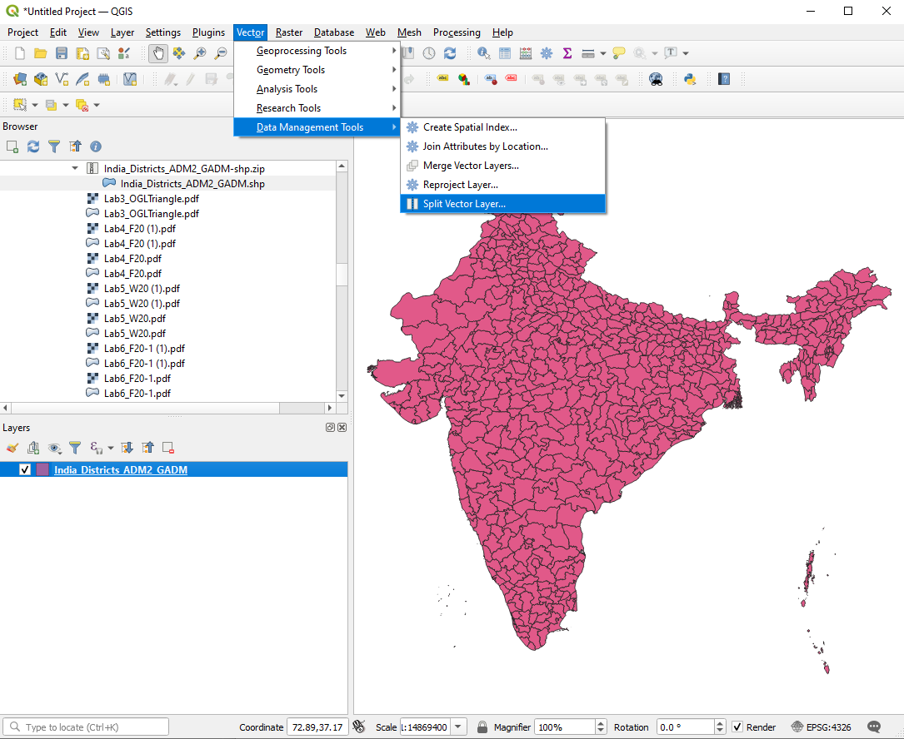
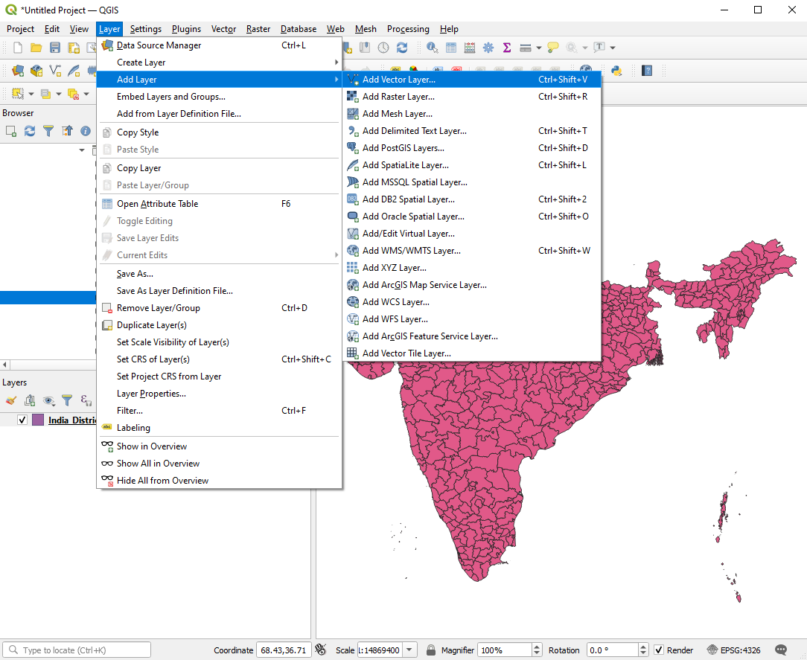

Instructions¶
1. Launch the QGIS Application¶
2. Click on the New Empty Project panel¶
This option is highlighted in red in the image below

3. Using the Browser sidepanel, find and click on the desired Shapefile¶

4. Click on Vector→Data Management Tools→Split Vector Layer…¶

5. Configure the Split Vector Layer tool settings and click Run¶
Input layer specifies what Layer is being used to generate the files
Unique ID field specifies the prefix for the generated files
Output directory is the directory which will contain the generated files

6. Once the Split Vector Layer tool finishes running, click on Layer→Add Layer →Add Vector Layer…¶

7. Configure the Data Source Manager accordingly¶
Ensure that it is under the Vector tab is selected
For the Source Type option, select File
Under Source navigate and select the generated file(s)

8. The selected file(s) should now appear as a new layer¶

from haversine import haversine, Unit
from shapely.geometry import Point, Polygon
import matplotlib.pyplot as plt
import csv
import pandas as pd
import geopandas as gpd
import fiona
import os
import pprint
%matplotlib inline
---------------------------------------------------------------------------
ModuleNotFoundError Traceback (most recent call last)
<ipython-input-1-0c9c842be264> in <module>
----> 1 from haversine import haversine, Unit
2 from shapely.geometry import Point, Polygon
3 import matplotlib.pyplot as plt
4 import csv
5 import pandas as pd
ModuleNotFoundError: No module named 'haversine'
df = pd.read_csv('population_AS47_2018-10-01.csv')
#df = df.iloc[100000:]
india_shp = gpd.read_file("shapefiles/India_Districts_ADM2_GADM.shp")
haversine(p1, p2, unit='in')
# find avg distance between consecutive points
sum_dist = 0
prev_pt = p1
n = 10
for i in range(1, n):
pt = (df['latitude'][i], df['longitude'][i])
dist = haversine(prev_pt, pt, unit='in') / 12
print(dist, " ft")
sum_dist += dist
prev_pt = pt
print("avg_dist in feet: ", sum_dist/(n-1))
# display shapefile
fig, ax = plt.subplots(figsize=(15,15))
india_shp.plot(ax = ax)
crs = {'init': 'epsg:4326'} # coordinate reference system (long, lat)
df.head()
# converting lat and long in df to coordinate shapely Points
geometry = [Point(xy) for xy in zip(df['longitude'], df['latitude'])]
geometry[:3]
geo_df = gpd.GeoDataFrame(df, #dataset
crs=crs, #coordinate system
geometry=geometry) # specify geometry list
geo_df.head()
# plot just a sliver of 18million points
lil_geo_df = geo_df.iloc[10000:30000]
fig, ax = plt.subplots(figsize=(15,15))
india_shp.plot(ax = ax, alpha=0.4, color='grey')
geo_df.plot(ax=ax, markersize=3, color='blue')
def shp_lookup(shp_dir, search_prop, query):
"""
function that returns name of shapefile (.shp) associated with a particualar field
If looking for shp by city, use
Args:
shp_dir : str
location of shapefiles to be searched
search_prop : str
field to search for in shapefiles
(city: 'NAME_2')
(region/state: 'NAME_1')
query : str
string to be searched for i.e. 'Delhi'
Returns:
str : filename of shapefile or None
"""
for filename in os.listdir(shp_dir):
if filename.endswith(".shp"):
with fiona.open(shp_dir + filename) as src:
if src[0]['properties'][search_prop] == query:
return filename
return "None"
shp_lookup(r'shapefiles/regions/', 'NAME_2', 'Delhi')